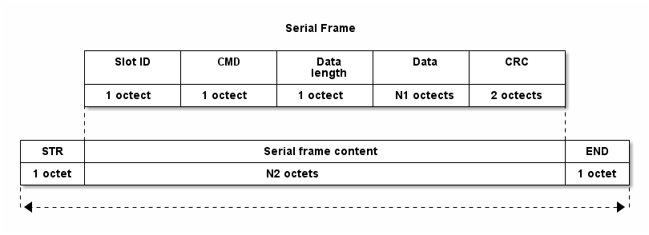

Total Manager Protocol
Table of Contents
- 1. General Serial Frame
- 2. For the External
- 3. For the Internal
- 3.1. Frame Format
- 3.2. Internal CMDs
- 3.2.1.
INTERNAL_CMD_BOARD_TYPE_REQ, (0x01) - 3.2.2.
INTERNAL_CMD_RESET, (0x02) - 3.2.3.
INTERNAL_CMD_SLOT_ID_REQ, (0x03) - 3.2.4.
INTERNAL_CMD_TEMPERATURE_REQ, (0x04) - 3.2.5.
INTERNAL_CMD_TEMPERATURE_STATE_REQ, (0x05) - 3.2.6.
INTERNAL_CMD_ADC_REQ, (0x06) - 3.2.7.
INTERNAL_CMD_THRESHOLD_REQ, (0x07) - 3.2.8.
INTERNAL_CMD_THRESHOLD_SET, (0x08) - 3.2.9.
INTERNAL_CMD_RELAY_REQ, (0x09) - 3.2.10.
INTERNAL_CMD_RELAY_SET, (0x0A) - 3.2.11.
INTERNAL_CMD_REVISION_CONSTANT_REQ, (0x0B) - 3.2.12.
INTERNAL_CMD_REVISION_CONSTANT_SET, (0x0C) - 3.2.13.
INTERNAL_CMD_REVISION_APPLY_REQ, (0x0D) - 3.2.14.
INTERNAL_CMD_REVISION_APPLY_SET, (0x0E) - 3.2.15.
INTERNAL_CMD_CALIBRATION_NTC_CON_TABLE_CAL, (0x0F) - 3.2.16.
INTERNAL_CMD_CALIBRATION_NTC_CON_TABLE_REQ, (0x10) - 3.2.17.
INTERNAL_CMD_CALIBRATION_NTC_CONSTANT_REQ, (0x11) - 3.2.18.
INTERNAL_CMD_CALIBRATION_NTC_CONSTANT_SET, (0x12)
- 3.2.1.
- 3.3. CRC
1 General Serial Frame
2 For the External
3 For the Internal
3.1 Frame Format
- Octet 2개(
STR:0xFE,END:0xFD)가 예약되어 있음 - Frame의 시작은
STR, 끝은END

- 각 field는 다음과 같음:
- Slot ID
- 1 octet. 0 - 3까지 값을 가짐.
0xFF이면 모든 슬롯을 의미함. - CMD
- 1 octet. 아래에서 구체적으로 설명함.
- Payload length
- 1 octet. payload의 최대 크기는
0xFF(256) bytes. - Payload
- N1
- CRC
- 2 octets.
3.2 Internal CMDs
3.2.1 INTERNAL_CMD_BOARD_TYPE_REQ, (0x01)
3.2.2 INTERNAL_CMD_RESET, (0x02)
3.2.3 INTERNAL_CMD_SLOT_ID_REQ, (0x03)
3.2.4 INTERNAL_CMD_TEMPERATURE_REQ, (0x04)
3.2.5 INTERNAL_CMD_TEMPERATURE_STATE_REQ, (0x05)
3.2.6 INTERNAL_CMD_ADC_REQ, (0x06)
3.2.7 INTERNAL_CMD_THRESHOLD_REQ, (0x07)
3.2.8 INTERNAL_CMD_THRESHOLD_SET, (0x08)
3.2.9 INTERNAL_CMD_RELAY_REQ, (0x09)
3.2.10 INTERNAL_CMD_RELAY_SET, (0x0A)
3.2.11 INTERNAL_CMD_REVISION_CONSTANT_REQ, (0x0B)
3.2.12 INTERNAL_CMD_REVISION_CONSTANT_SET, (0x0C)
3.2.13 INTERNAL_CMD_REVISION_APPLY_REQ, (0x0D)
3.2.14 INTERNAL_CMD_REVISION_APPLY_SET, (0x0E)
3.2.15 INTERNAL_CMD_CALIBRATION_NTC_CON_TABLE_CAL, (0x0F)
3.2.16 INTERNAL_CMD_CALIBRATION_NTC_CON_TABLE_REQ, (0x10)
3.2.17 INTERNAL_CMD_CALIBRATION_NTC_CONSTANT_REQ, (0x11)
3.2.18 INTERNAL_CMD_CALIBRATION_NTC_CONSTANT_SET, (0x12)
3.3 CRC
/* CRC16 implementation acording to CCITT standards */ static const uint16_t crc16tab[256]= { 0x0000,0x1021,0x2042,0x3063,0x4084,0x50a5,0x60c6,0x70e7, 0x8108,0x9129,0xa14a,0xb16b,0xc18c,0xd1ad,0xe1ce,0xf1ef, 0x1231,0x0210,0x3273,0x2252,0x52b5,0x4294,0x72f7,0x62d6, 0x9339,0x8318,0xb37b,0xa35a,0xd3bd,0xc39c,0xf3ff,0xe3de, 0x2462,0x3443,0x0420,0x1401,0x64e6,0x74c7,0x44a4,0x5485, 0xa56a,0xb54b,0x8528,0x9509,0xe5ee,0xf5cf,0xc5ac,0xd58d, 0x3653,0x2672,0x1611,0x0630,0x76d7,0x66f6,0x5695,0x46b4, 0xb75b,0xa77a,0x9719,0x8738,0xf7df,0xe7fe,0xd79d,0xc7bc, 0x48c4,0x58e5,0x6886,0x78a7,0x0840,0x1861,0x2802,0x3823, 0xc9cc,0xd9ed,0xe98e,0xf9af,0x8948,0x9969,0xa90a,0xb92b, 0x5af5,0x4ad4,0x7ab7,0x6a96,0x1a71,0x0a50,0x3a33,0x2a12, 0xdbfd,0xcbdc,0xfbbf,0xeb9e,0x9b79,0x8b58,0xbb3b,0xab1a, 0x6ca6,0x7c87,0x4ce4,0x5cc5,0x2c22,0x3c03,0x0c60,0x1c41, 0xedae,0xfd8f,0xcdec,0xddcd,0xad2a,0xbd0b,0x8d68,0x9d49, 0x7e97,0x6eb6,0x5ed5,0x4ef4,0x3e13,0x2e32,0x1e51,0x0e70, 0xff9f,0xefbe,0xdfdd,0xcffc,0xbf1b,0xaf3a,0x9f59,0x8f78, 0x9188,0x81a9,0xb1ca,0xa1eb,0xd10c,0xc12d,0xf14e,0xe16f, 0x1080,0x00a1,0x30c2,0x20e3,0x5004,0x4025,0x7046,0x6067, 0x83b9,0x9398,0xa3fb,0xb3da,0xc33d,0xd31c,0xe37f,0xf35e, 0x02b1,0x1290,0x22f3,0x32d2,0x4235,0x5214,0x6277,0x7256, 0xb5ea,0xa5cb,0x95a8,0x8589,0xf56e,0xe54f,0xd52c,0xc50d, 0x34e2,0x24c3,0x14a0,0x0481,0x7466,0x6447,0x5424,0x4405, 0xa7db,0xb7fa,0x8799,0x97b8,0xe75f,0xf77e,0xc71d,0xd73c, 0x26d3,0x36f2,0x0691,0x16b0,0x6657,0x7676,0x4615,0x5634, 0xd94c,0xc96d,0xf90e,0xe92f,0x99c8,0x89e9,0xb98a,0xa9ab, 0x5844,0x4865,0x7806,0x6827,0x18c0,0x08e1,0x3882,0x28a3, 0xcb7d,0xdb5c,0xeb3f,0xfb1e,0x8bf9,0x9bd8,0xabbb,0xbb9a, 0x4a75,0x5a54,0x6a37,0x7a16,0x0af1,0x1ad0,0x2ab3,0x3a92, 0xfd2e,0xed0f,0xdd6c,0xcd4d,0xbdaa,0xad8b,0x9de8,0x8dc9, 0x7c26,0x6c07,0x5c64,0x4c45,0x3ca2,0x2c83,0x1ce0,0x0cc1, 0xef1f,0xff3e,0xcf5d,0xdf7c,0xaf9b,0xbfba,0x8fd9,0x9ff8, 0x6e17,0x7e36,0x4e55,0x5e74,0x2e93,0x3eb2,0x0ed1,0x1ef0 }; uint16_t crc16_ccitt(const uint8_t *buf, int len) { register int counter; register uint16_t crc = 0; for( counter = 0; counter < len; counter++) crc = (crc<<8) ^ crc16tab[((crc>>8) ^ *(uint8_t *)buf++)&0x00FF]; return crc; }